Propuesta de un servicio web de información sobre el territorio, la población y el crecimiento previsto de la diócesis
Qué es
Un sitio web público, de consulta libre y gratuita, que reúne en un solo lugar la información territorial y estadística de la diócesis: qué parroquias hay y cuál es el territorio de cada una, quiénes viven en él y cómo se espera que crezca. Se presenta como una propuesta de servicio para información del clero y de los feligreses.
Cinco secciones
- Arciprestazgos y parroquias
- Información demográfica
- Previsión de desarrollos urbanísticos
- Anuario (en preparación)
- Estudios
La portada da paso a esta presentación e invita a dejar comentarios sobre el sitio.
Noviembre de 2026

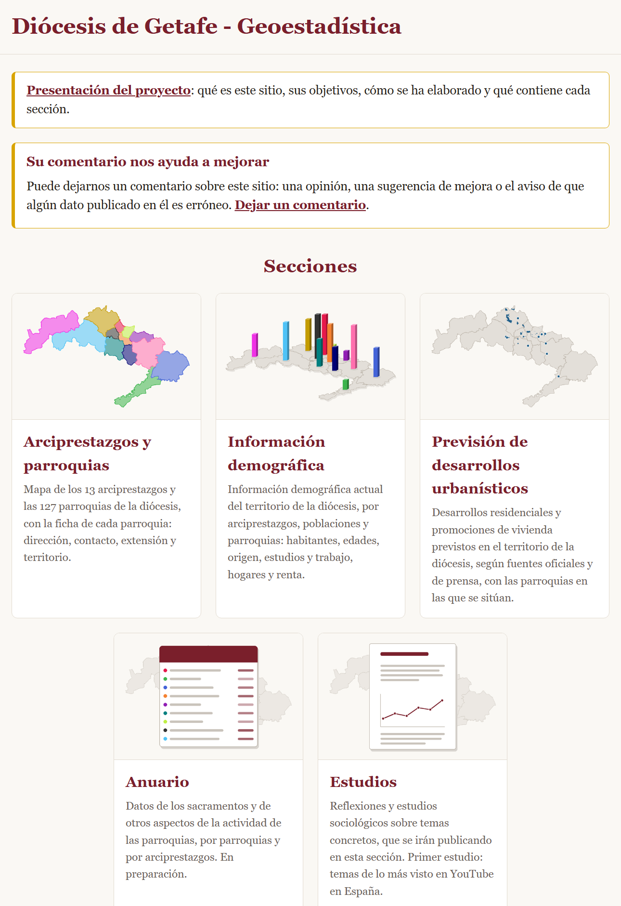
Objetivos
Ayudar a decidir
Dar al obispo y a sus órganos consultores datos objetivos para estudiar la creación de nuevas parroquias y la distribución del clero.
Conocer el territorio
Ofrecer al clero y a los agentes de pastoral de cada parroquia un retrato de la población a la que sirven.
Informar a todos
Permitir que cualquier persona sepa a qué parroquia pertenece su domicilio y consulte los datos de su zona.
Tres niveles de información
Base
Arciprestazgos, parroquias, sus territorios y sus datos básicos.
Demografía actual
Quiénes viven hoy en cada parroquia, población y arciprestazgo.
Previsión
Dónde se van a construir viviendas y cuántas.
Metodología
Fuentes
- Decretos de erección y delimitación de los territorios parroquiales.
- Datos del Instituto Nacional de Estadística (INE) por sección censal y por municipio.
- Planeamiento urbanístico oficial, boletines, licitaciones y prensa.
Elaboración
- Los datos del INE se reparten entre las parroquias según la superficie de cada sección censal que cae en cada una.
- Los de una población, un arciprestazgo o la diócesis son la suma de sus parroquias.
- Cada desarrollo urbanístico se sitúa sobre el territorio de su parroquia.
Publicación
- Mapas interactivos, fichas, tablas y gráficos.
- Datos descargables.
- Una página explica el procedimiento y las fuentes.
- Una estrella amarilla junto a cada dato demográfico lleva a su fuente original.
Criterios de trabajo
- Solo cifras agregadas. No se publica ningún dato personal.
- Cada dato, con su fuente y su fecha. Todo se puede comprobar en el original, y el sitio indica cómo hacerlo.
- Sin cifras inventadas. Si un dato falta, se deja vacío y se dice por qué.
- Proceso reproducible. El sitio se genera de forma automática a partir de los datos: actualizarlo cuando cambian los límites o cuando el INE publica datos nuevos es rápido.
- Sin coste de alojamiento y sin cookies ni registro de visitantes.
Alcance de los datos. Los datos demográficos de las parroquias son estimaciones: sirven para hacerse una buena idea, no son cifras exactas. Los de arciprestazgos y de la diócesis coinciden con las cifras oficiales de sus municipios. Los datos son de las personas empadronadas en el territorio, no de los feligreses.
Sección 1
Arciprestazgos y parroquias
El mapa de la diócesis, con la ficha de cada una de sus 127 parroquias.

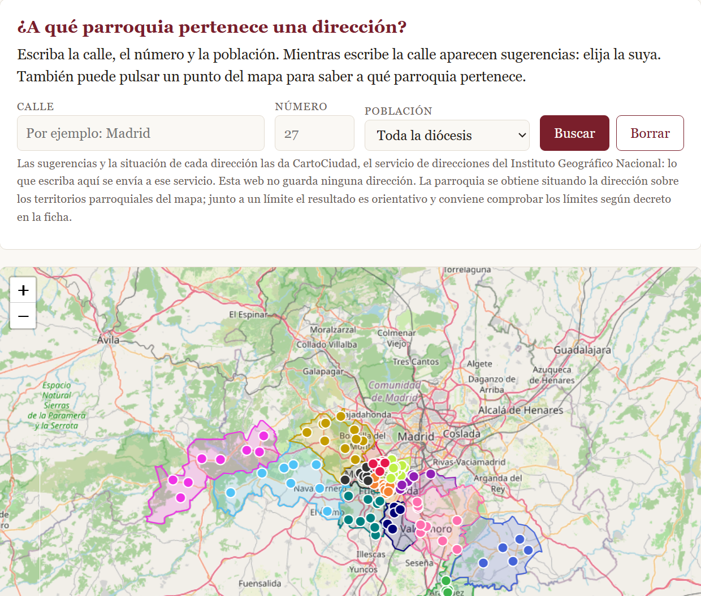
Qué ofrece
- Buscador de direcciones: se escribe una calle y un número y responde a qué parroquia y a qué arciprestazgo pertenece ese domicilio.
- Ficha de cada parroquia: dirección, teléfono, correo, extensión, mapa de su territorio y texto de los límites según su decreto.
- Mapa del atlas de cada parroquia, que se puede descargar.
- Puntos de interés del territorio de cada parroquia: entidades religiosas no católicas y centros educativos, en un mapa y en una lista.
- La parroquia en una hoja: resumen de cada parroquia para imprimir o guardar como PDF en A4.
- Mapa de cada arciprestazgo preparado para imprimir en tamaño A3.

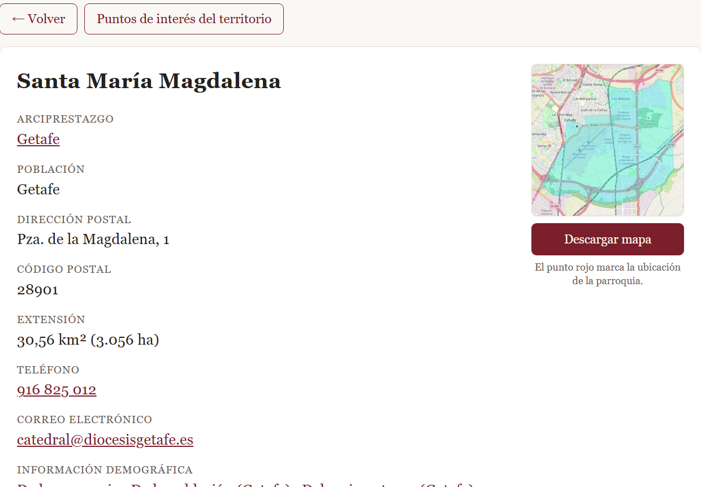

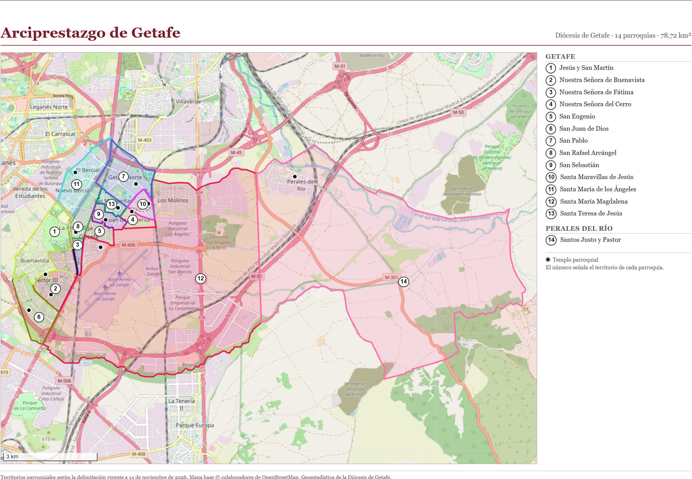
Puntos de interés del territorio
Desde la ficha de cada parroquia, el botón «Puntos de interés del territorio» abre una página con un selector para elegir el tipo de puntos (entidades religiosas no católicas o centros educativos), un mapa del territorio parroquial con esos puntos y la lista de los que están dentro de él. El punto rojo marca la ubicación de la parroquia.
Las entidades religiosas proceden del Registro de Entidades Religiosas del Ministerio de la Presidencia, Justicia y Relaciones con las Cortes, y los centros educativos, del registro de centros educativos de la Comunidad de Madrid (solo los que figuran de alta).

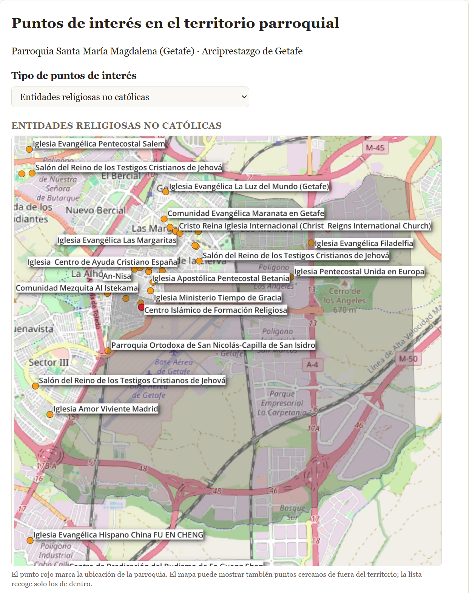

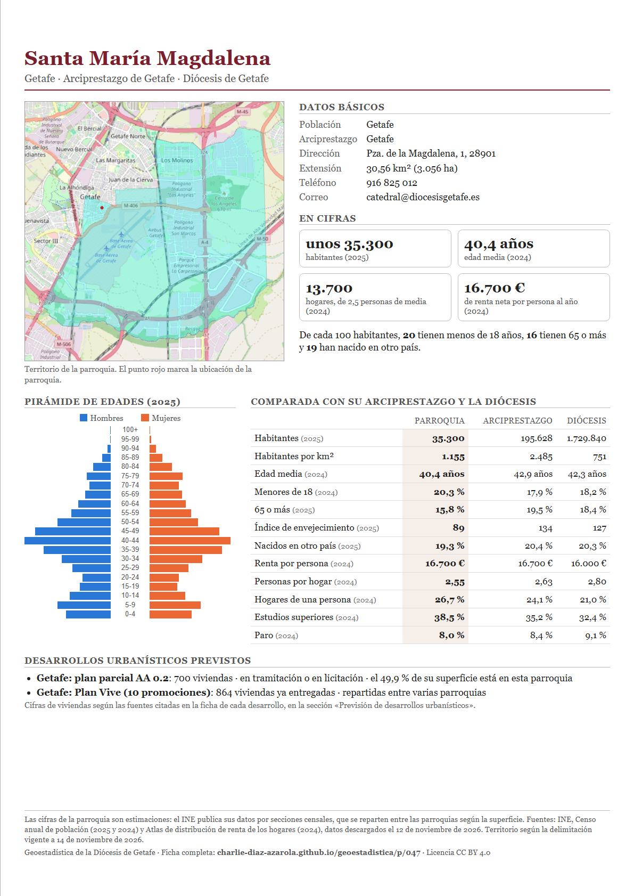
La parroquia en una hoja
Cada parroquia tiene un resumen preparado para imprimir o guardar como PDF en una hoja A4 vertical: el mapa de su territorio, sus datos básicos, cuatro cifras (habitantes, edad media, hogares y renta), la pirámide de edades, doce indicadores comparados con su arciprestazgo y con la diócesis y los desarrollos urbanísticos previstos en su territorio.
Al pie lleva las fuentes, la fecha de la delimitación y una dirección corta de la ficha. Se abre desde la ficha de la parroquia y desde su ficha de «Información demográfica».
Parroquias y extensión de cada arciprestazgo
Extensión en km² (barra) y número de parroquias. Territorios según la delimitación vigente a 14 de noviembre de 2026.
Sección 2
Información demográfica
Quiénes viven en el territorio de cada parroquia, de cada población, de cada arciprestazgo y de toda la diócesis.
Qué ofrece
- Fichas en cuatro niveles con habitantes, edades, origen, estudios y trabajo, hogares, renta, nacimientos, defunciones y matrimonios.
- Tablas para comparar las 127 parroquias y las 49 poblaciones, que se ordenan por cualquier dato.
- Mapa temático: las parroquias coloreadas según el dato que se elija.
- Descarga de los datos para trabajar con ellos en una hoja de cálculo.

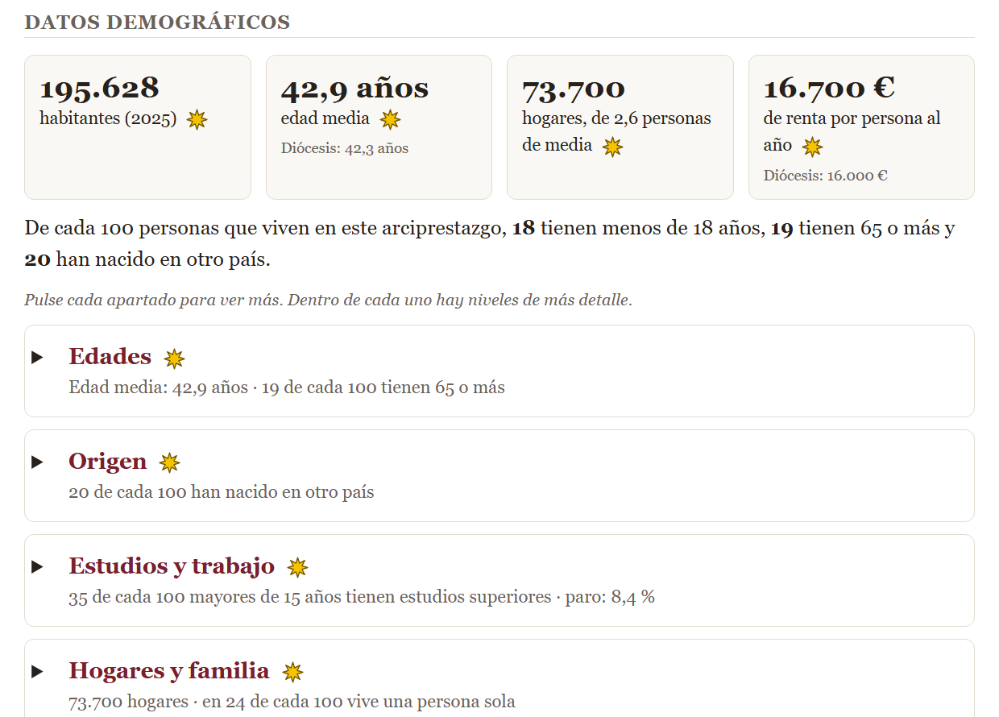
Habitantes y crecimiento desde 2021
Diócesis: 1.729.840 habitantes, +4,9 % desde 2021.
Índice de envejecimiento
Mayores de 64 por cada 100 menores de 15. Diócesis: 127.
Lo que muestran los datos
- La diócesis ha ganado un 4,9 % de habitantes en cuatro años. El arciprestazgo que más crece es Villaviciosa de Odón (+9,4 %); el único que pierde población, Fuenlabrada (−1,5 %).
- El envejecimiento es muy desigual: en Alcorcón hay 182 mayores por cada 100 niños; en Griñón, 60.
- Uno de cada cinco habitantes (20 %) ha nacido en otro país.
Fuente: Instituto Nacional de Estadística (Censo anual de población, 2021-2025). Elaboración propia.

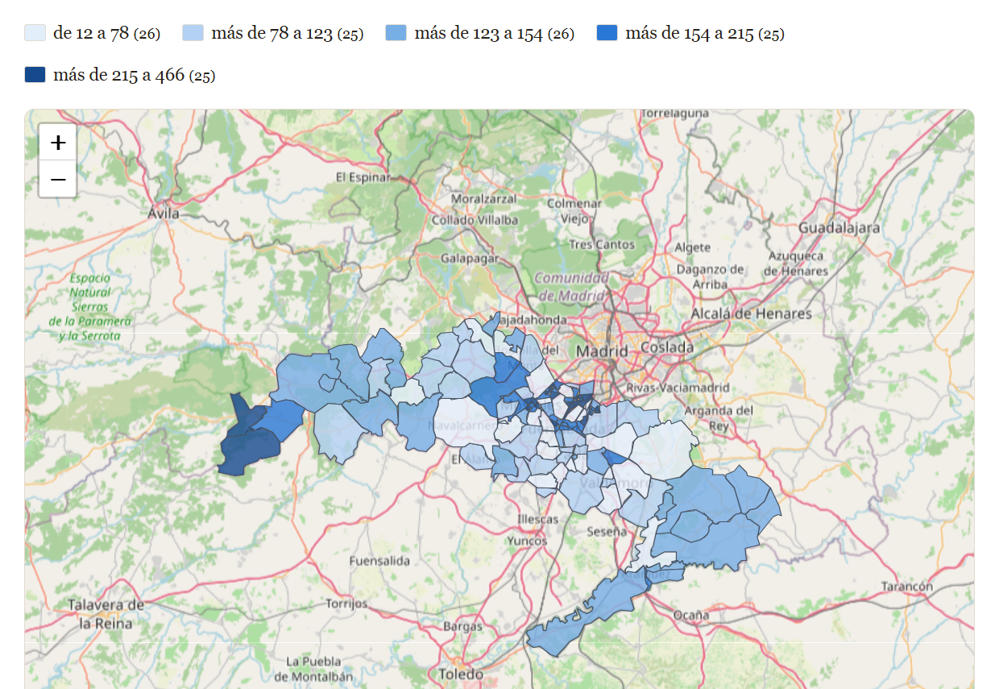
Datos verificables
Cualquier persona puede comprobar en la fuente original de dónde sale cada dato demográfico del sitio.

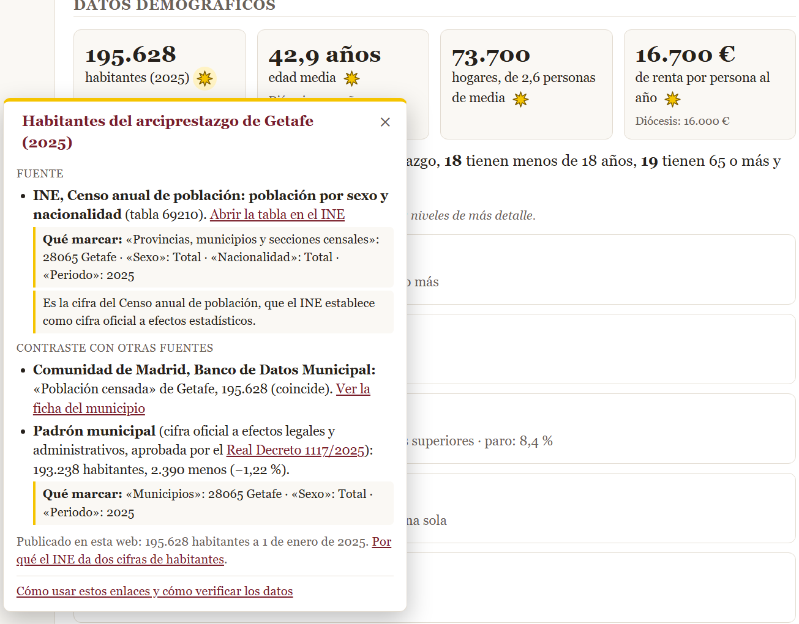
La estrella amarilla
Junto a los datos de «Información demográfica» (resumen, temas de las fichas y columnas de las tablas comparativas) hay una estrella amarilla de ocho puntas. Al pulsarla se abre un globo con:
- Fuente: el organismo y la tabla exacta, con el enlace para abrirla.
- Qué marcar en la página de la fuente para ver ese mismo dato.
- Contraste: si otro organismo publica el dato, su cifra y cuánto difiere.
Las fuentes son el INE, la Comunidad de Madrid y el Boletín Oficial del Estado.
Dónde se explica
- Al principio de «Información demográfica», con instrucciones para usar las tablas del INE.
- En la página «Cómo verificar los datos», enlazada desde el pie de todas las páginas. Explica las dos cifras oficiales de habitantes (el Censo anual, que usa el sitio, y el Padrón municipal) y qué no se puede contrastar: los datos de cada parroquia son estimaciones del sitio.

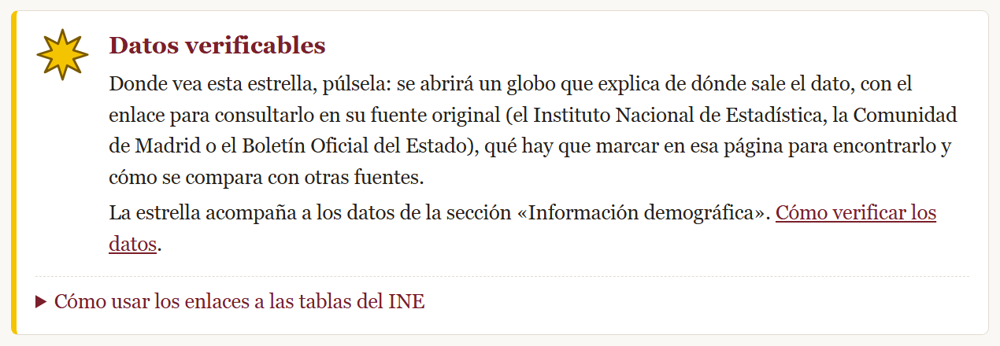
Auditoría antes de cada publicación
Antes de publicar una actualización, un programa de comprobación vuelve a descargar las fuentes y las compara con lo que se va a publicar: los habitantes de cada municipio, con el Censo anual, el Padrón y el Banco de Datos Municipal de la Comunidad de Madrid; los nacimientos, defunciones y matrimonios, con la Comunidad de Madrid; la edad media, el tamaño de los hogares y la renta, con el dato municipal del INE; y todos los enlaces de los globos. Avisa también cuando hay datos más recientes. El resultado se publica en la página «Cómo verificar los datos».
Última comprobación: 18 de noviembre de 2026
Sección 3
Previsión de desarrollos urbanísticos
Dónde se van a construir viviendas en la diócesis, cuántas y en el territorio de qué parroquia.

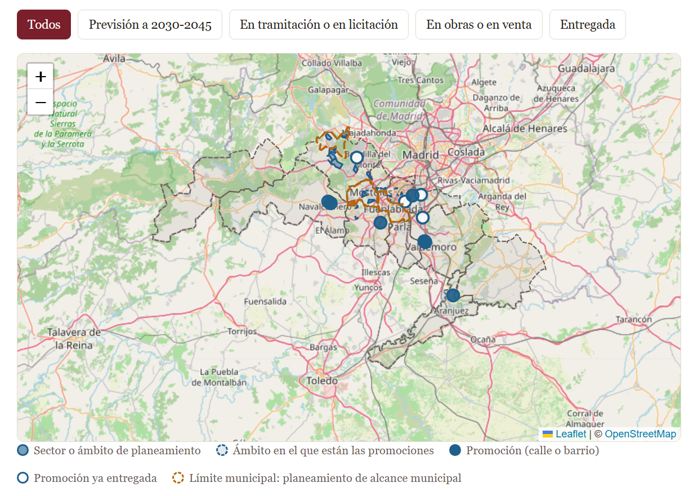
Qué ofrece
- Mapa y tabla de todos los desarrollos, con su municipio, su arciprestazgo, su parroquia, su estado y sus viviendas.
- Ficha de cada desarrollo con su descripción y sus fuentes.
- Enlace desde cada parroquia y cada arciprestazgo a los desarrollos de su territorio.
Los polígonos son ámbitos oficiales del planeamiento: ninguno se ha dibujado a mano.
Viviendas previstas por arciprestazgo
Viviendas previstas según su estado
No se cuentan las viviendas ya entregadas ni el planeamiento de alcance municipal, que el sitio muestra aparte.
Para qué sirve
Permite anticipar dónde habrá barrios nuevos y qué parroquias recibirán más población, antes de que lleguen los vecinos.
Fuentes: notas de prensa de la Comunidad de Madrid y de los ayuntamientos, boletines oficiales, licitaciones y prensa, citadas en la ficha de cada desarrollo. Datos del sitio a 14 de noviembre de 2026. Son previsiones y pueden cambiar.
Sección 4
Anuario
Una sección abierta en el sitio, todavía en preparación.
Recogerá, por parroquias y por arciprestazgos, datos de los sacramentos y de otros aspectos de la actividad de las parroquias.
Presentados por años, permitirán seguir su evolución y relacionarlos con la población de cada territorio: por ejemplo, los bautismos de una parroquia con los nacimientos de su zona.
Solo se publicarán cifras agregadas, nunca datos de personas concretas.
Sección 5
Estudios
Reflexiones y estudios sociológicos sobre temas concretos, que se irán publicando. Hay dos publicados.

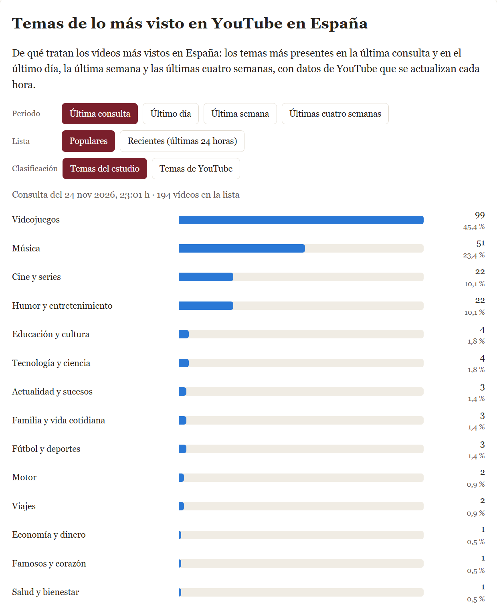
Temas de lo más visto en YouTube en España
De qué tratan los vídeos más vistos en España, con datos de la API de YouTube que se recogen cada hora.
- Cuatro periodos: la última consulta, el último día, la última semana y las últimas cuatro semanas.
- Dos listas: los vídeos populares y los más vistos de las últimas 24 horas.
- Dos clasificaciones: los temas del estudio, según las palabras del título, y los que asigna YouTube.
- Buscador de palabras en los títulos: cuántos vídeos de cada una de las últimas cuatro semanas llevan la palabra y la lista de esos vídeos, con la palabra resaltada y un enlace a cada uno en YouTube.
- Evolución diaria de cada tema.
Solo se cuentan vídeos por tema: sin visualizaciones, conforme a las normas de la API de YouTube.
La autodefinición religiosa en España según el CIS
Cuántos españoles se declaran católicos, practicantes, ateos, agnósticos o de otra religión, según el Centro de Investigaciones Sociológicas.
- Resumen del último barómetro comparado con el primer dato de cada respuesta.
- Recorrido desde 1978, con las líneas cortadas donde cambia la pregunta.
- Asistencia a misa, jóvenes de 18 a 24 años y otras religiones.
- Estudios monográficos del CIS sobre religión y datos descargables.
Se actualiza cada mes, con cada nuevo barómetro.

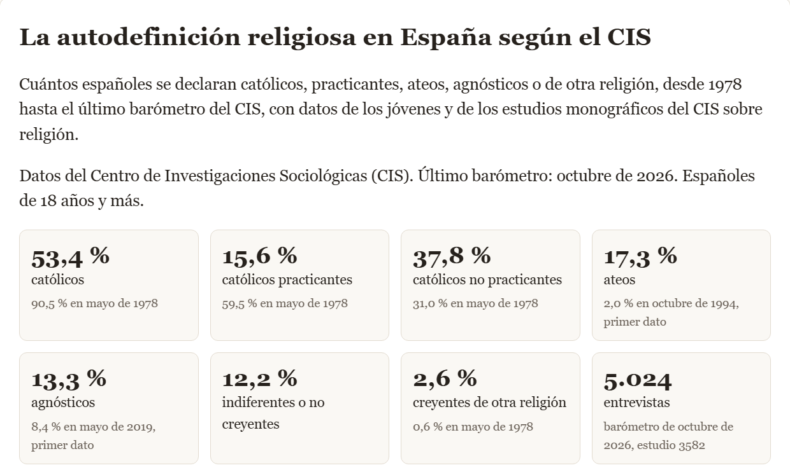
Cada estudio indica su fecha, los datos en los que se apoya y sus fuentes.
Resumen de las cinco secciones
| Sección | Contenido | Estado |
|---|---|---|
| 1. Arciprestazgos y parroquias | Mapa, buscador de direcciones, 127 fichas con sus puntos de interés, la parroquia en una hoja y mapas para imprimir | Publicada |
| 2. Información demográfica | Datos del INE en cuatro niveles, tablas comparativas, mapa temático, descarga y verificador de datos | Publicada |
| 3. Previsión de desarrollos urbanísticos | 35 desarrollos con 49.456 viviendas previstas | Publicada |
| 4. Anuario | Sacramentos y actividad parroquial | En preparación |
| 5. Estudios | Reflexiones y estudios sociológicos sobre temas concretos: temas de lo más visto en YouTube en España y autodefinición religiosa según el CIS | Publicada |
Pasos siguientes
- Anuario: reunir los datos de sacramentos por parroquia y año (cifras agregadas) y acordar qué datos se publican.
- Estudios: revisar el diccionario de temas del estudio sobre YouTube con los datos de sus primeras semanas, añadir cada mes el nuevo barómetro del CIS y elegir los temas de los siguientes estudios.
- Mantenimiento: actualizar los datos demográficos cada año, cuando el INE publique el nuevo censo, e incorporar los desarrollos urbanísticos nuevos.
- Correcciones: recoger las que comuniquen las parroquias sobre sus datos y sus límites.